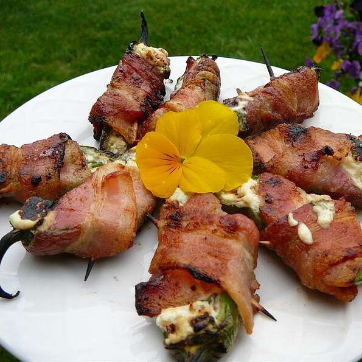

Screamin' Stuffed Jalapeno Peppers

Description
NOT FOR THE FAINT OF HEART. YOU HAVE BEEN WARNED.
Ingredients
- 25 toothpicks
- 2 (8 ounce) packages cream cheese, room temperature
- 4 cloves garlic, minced
- 1/4 cup chopped sun-dried tomatoes (not oil-pakced)
- 1 tbsp chopped fresh basil leaves, or amount to taste
- 1 pinch salt
- 25 fresh jalapeno peppers
- 1 pound thinly sliced bacon
Directions
- Preheat a grill for medium-high heat. When the grill is hot, lightly oil the grate. Soak toothpicks 20 minutes in water.
- Place the cream cheese in a bowl, and mix in the garlic, sun-dried tomatoes, basil, and salt until evenly blended.
- Make one slit from end to end in the side of each jalapeno pepper, and scoop out the seeds. Spoon the cream cheese mixture into the center of each pepper. Wrap 1 piece of bacon around each pepper, and secure with a toothpick.
- Place the peppers on the preheated grill, and cook until peppers begin to soften, about 10 minutes.
Home
Back to top